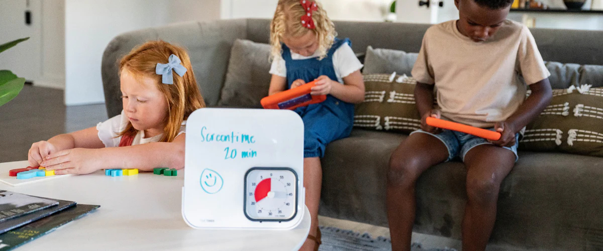

How to do it
- Place a kitchen timer—or any physical timer—in a shared space like the living room, where everyone (parents and children) can see it. Set a clear, visible screen time limit as a public family commitment.
- As a general guide, the UK’s recommended screen time limits are:
- Ages 0–2: No screen time (except for video calls)
- Ages 2–5: Up to 1 hour per day
- Ages 6–12: Up to 2 hours per day
- Ages 13+: Ideally no more than 2 hours per day
*These UK guidelines are based on recent child-digital well being research and are widely used in studies on healthy media habits. (Source: How Much Screen Time is Too Much? Practical Guidelines for Parents - Kids First Children's Services)
Why it helps
Provides a tangible endpoint instead of relying on in-app service that kids can ignore.
Tips 💬
Frame this exercise as a cool brain challenge.
Sometimes, children struggle with discipline simply because the rules around when to stop aren’t clear or consistent.
Image from Time Timer
By setting clear, physical boundaries (like a timer or a visual schedule) parents and children can better communicate when it’s time to watch YouTube and when it’s time to stop. This not only reduces confusion but also helps children learn important values like keeping promises, taking responsibility, and practicing self-discipline.